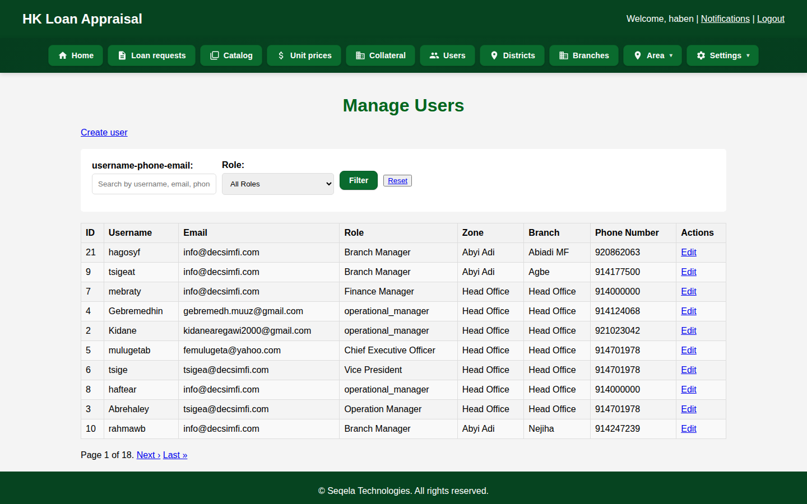
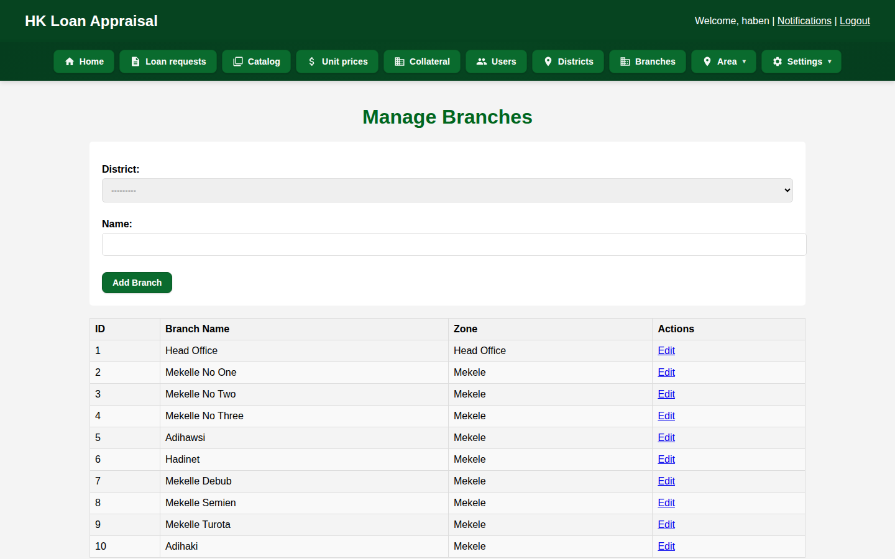
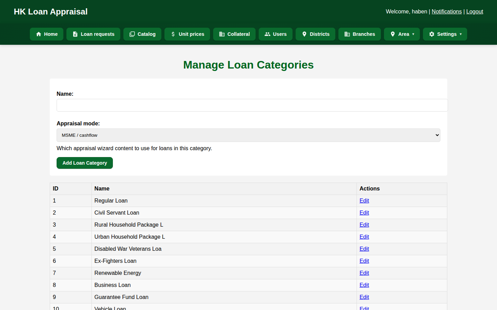

Hub home — totals, status mix, and role navigation (Home, Loan requests, Catalog, Users, Districts, Branches).View loan requests — searchable, filterable queue with status, assignee, and actions.
Confidential · Live at DECSI
Queue management
Create a Request and Open a File
Create loan request — branch-owned intake: product, amount, collateral type, customer details.Loan detail — one record for the file: intake, status, and the path into appraisal and collateral.
Confidential · Live at DECSI
User and branch management
People and Geography

User management — accounts and roles aligned to how DECSI staff actually work.

Branch management — districts and branches as first-class master data.
Confidential · Live at DECSI
Catalogs
Loan Types and Collateral Types

Loan type management — the products a branch can put on the queue.Collateral type management — categories and policy used on requests and in valuation.
Confidential
The product around the queue
Credit Factory — End to End
Green pills are live at DECSI today. The rest is the system built around that queue, ready to configure.
Sheet 3 cashflow — DSCR, stress, annual capacity, 12-month grid. The analytical heart of MSME underwriting.Sheet 6 summary — explainable scorecard and officer recommendation that feeds committee.
Sheets also cover character, E&S, collateral worksheet, and amortization. Corporate mode uses the same seven steps.
Confidential · Product
GPS collateral
Field Evidence Committees Can Trust
Field visit — site → BOQ → photos → review; GPS pin; offline tablet for weak connectivity.Evidence pack — coverage, GPS map, BOQ totals, photos, engineering QA, reconstructable dossier.
Confidential · Product
Approval committees
Complete Packs, Amount-Routed Votes
Committee queue — Branch → District → Head Office → Management, by amount threshold.Vote — approve, decline, or return to officer with notes. Pack includes scorecard, DSCR, E&S, GPS.